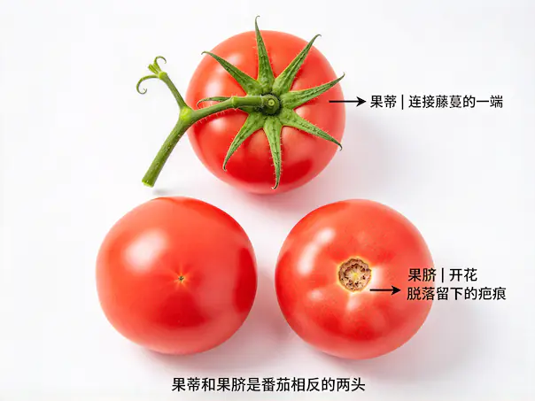
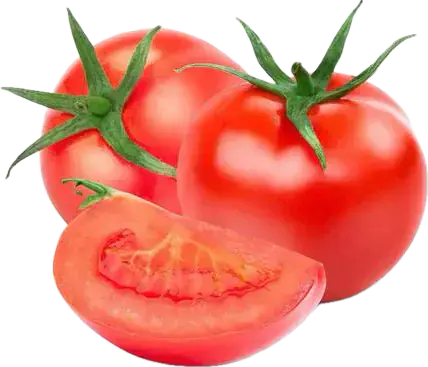
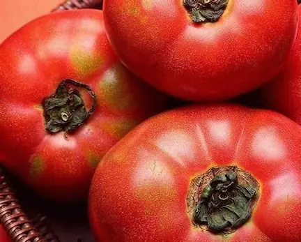
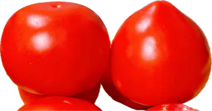
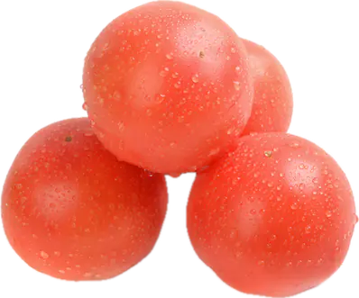
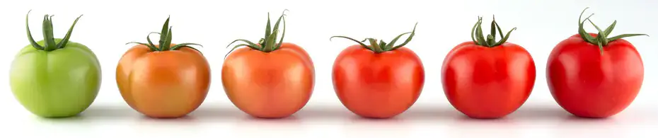

番茄钾多、钠少，对血压友好，一般人均可食用。高血压患者可适量多吃（高钾低钠）。肾功能不全者需遵医嘱控制摄入量。
怎么挑选
上端叶片 果蒂
番茄顶部，绿色五角星叶子，连接藤蔓的一端，用来判断新鲜度；
- 嫩绿色、偏干燥不萎蔫，代表新鲜；
- 发黄发枯表示放久了。



下端形状 果脐
果子开花脱落留下的疤痕圈；
- 果脐小、下端圆 表示果肉饱满汁水足；
- 果脐大、下端尖、不够重 更容易空心、果肉发硬、汁水少。


看颜色
如下图所示，从左到右逐步成熟； 自然成熟番茄通体红润均匀，软硬适中； 催熟番茄外皮通红，内部偏硬、籽未成熟。
- 颜色越红、色泽均匀，表示自然成熟充分，风味浓郁；
- 通体发红，果蒂周围发白、果肉发硬的为催熟番茄。

软硬度
捏着有点软的，软硬适中，肉汁饱满，需要在1～2天吃完，口感最好。
捏着很硬的，成熟度比较低，吃着很酸；
用力捏不动的，激素番茄，口感差、汁水少。
做法
| 菜 | 材料 | 做法 |
|---|---|---|
番茄炒鸡蛋  | 番茄、鸡蛋、葱花、盐、糖、酱油。 |
|
番茄炖牛腩  | 番茄、土豆、牛腩、洋葱小半个、少许姜片、盐、生抽、料酒。 |
|
番茄煎土豆  | 番茄、土豆、罗勒叶（九层塔）、盐、白胡椒粉。 |
|
常见品种
大红番茄
果型圆润饱满，通体鲜红色，果皮紧实有光泽。汁水充足、酸度适中，很容易炒出红浓汤。
家常菜常用，如番茄炒鸡蛋、炖牛腩等。

粉番茄
浅粉色，外形圆润工整，果肉紧实硬挺；汁水偏少，不容易炒烂。
主要用来切片摆盘、生吃。

普罗旺斯番茄 粉果沙瓤
果皮柔和粉红色，部分果蒂端带有绿肩；
果型饱满、皮薄、切开内部是沙瓤质地，汁水充盈，酸甜均衡，浓郁天然番茄香气。
生吃凉拌，也适合炖煮，极易炒出沙。

牛排番茄、牛心番茄
个头巨大，外形呈心形，轮廓略带不规则起伏，成熟多为粉红 / 红色。
皮薄，汁水饱满，果肉厚实，籽极少，几乎没有硬芯，番茄风味浓郁。
厚切生吃、夹三明治，也可以炖煮。